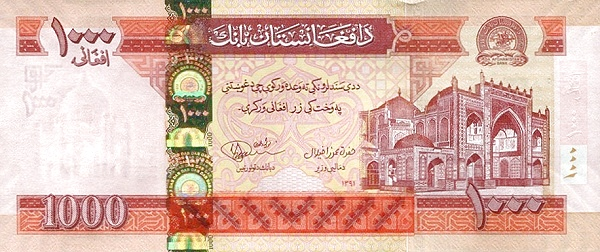

____
Валюта
Валюта в Афганистана - Афганский афгани.
Курс: 1 Афганский афгани - 0,95 рублей (7 февраля 2021).
Появился Афганский афгани в 1978 году. Находятся банкноты номиналом 1, 2, 5, 10, 20, 50, 100, 500, 1000 афгани, а также монеты — 1, 2, 5 афгани.

История
Афгани был введён в обращение в июле 1926 года в виде серебряной монеты 900-й пробы, содержавшей 10 г серебра. Афгани очень долго сосуществовал в обращении с кабульской рупией (10 афгани = 11 кабульских рупий), а также индийскими, иранскими, русскими и бухарскими монетами. До 1927 года большая часть монет в обращении были индийскими. Золотые монеты в афгани не имели твёрдого соотношения с серебряным афгани.
Хождение монет в кабульских рупиях прекратилось лишь в 1978 году, накануне ввода в Афганистан советских войск, после чего там утвердилась монополия афгани. Первые афганские банкноты были выпущены в 1935 году Афганским национальным банком. В 1939 году был создан государственный Да Афганистан банк, начавший в том же году выпуск банкнот. До Второй мировой войны банкноты обоих банков и билеты казначейства обменивались на серебро.
В 1991 году банкноты периода королевства формально утратили силу законного платёжного средства, но фактически продолжали использоваться в обращении.
В период анархии полевые командиры и другие политические движения использовали свои собственные Афгани. До 2002 года в обращении были два вида Афгани: «давляти», выпускаемые центральным правительством и «достуми», выпускаемые по указу генерала Дустума на подконтрольной ему территории. Внешне они не отличались, различие идёт только по номиналам. Также использовалась особая валюта Северного Альянса. Все купюры со времён Апрельской революции печатались в СССР, затем России. На севере Афганистана (в основном подконтрольной генералу Дустуму) имели хождение оба вида валюты. Однако дустумовские деньги были дешевле государственных. В других районах страны использовались пакистанские рупии, иранские риалы и доллары США.
При талибах курс национальной валюты составлял до 85 тыс. за $1.
____